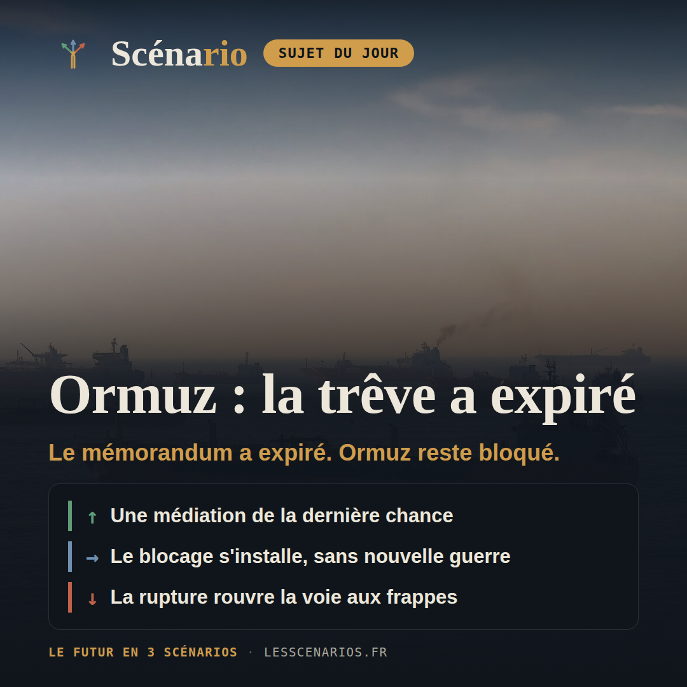
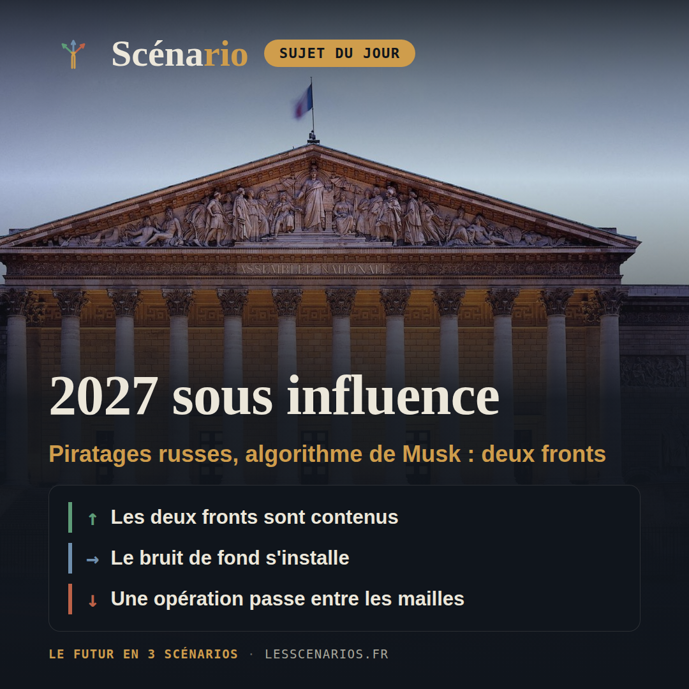
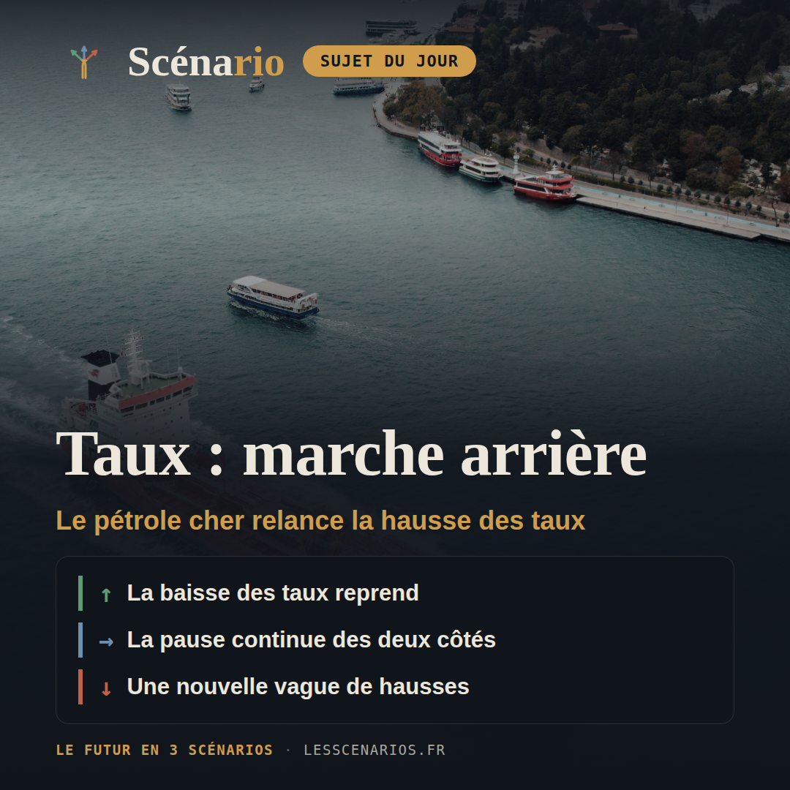
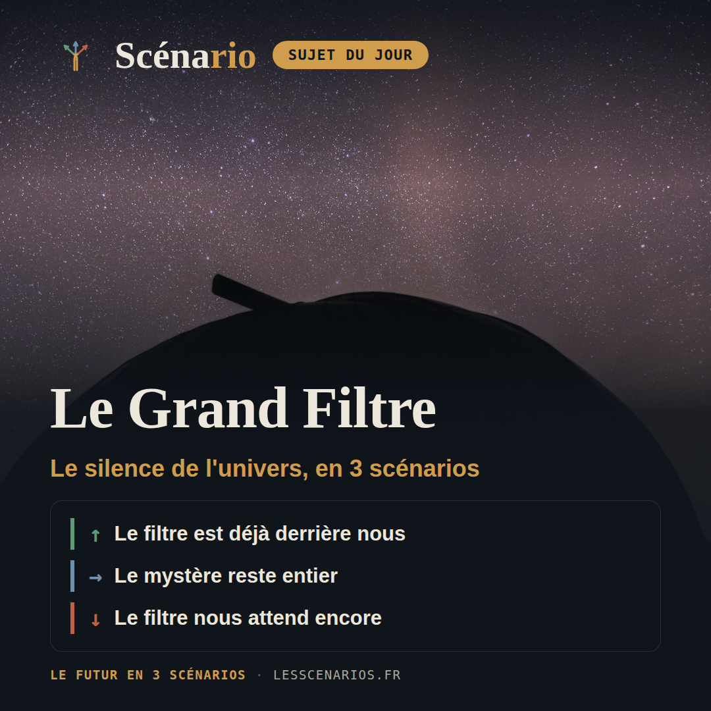
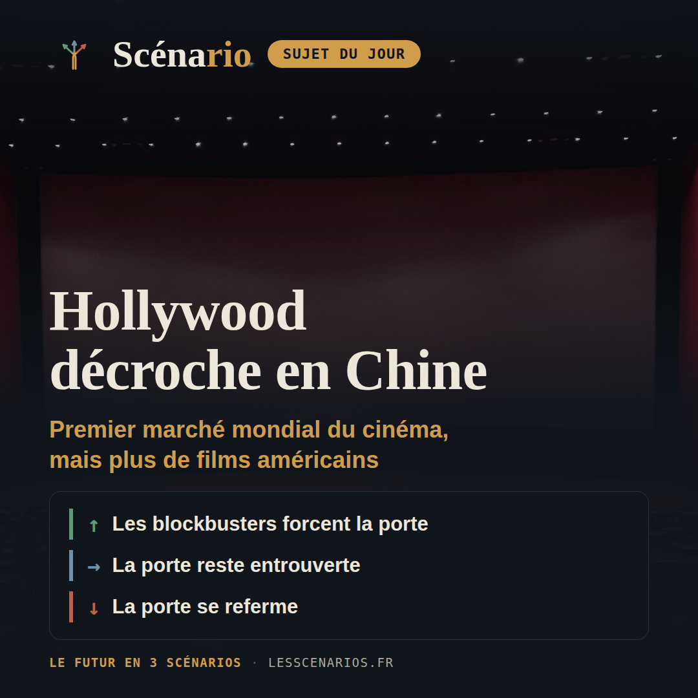

Récap hebdo
17 août au 23 août 2026 — sept sujets, sept fois trois scénarios chiffrés.
Lundi, géopolitique

❓ Le mémorandum de 60 jours signé à Islamabad le 17 juin pour desserrer la crise Iran–États-Unis est arrivé à échéance le 16 août sans accord de prolongation confirmé par les deux camps, Téhéran allant jusqu'à nier qu'il y ait jamais eu un cessez-le-feu à prolonger : le blocage autour du détroit d'Ormuz, par où transitait un cinquième du pétrole mondial, va-t-il se dénouer par une nouvelle médiation, s'enliser dans l'impasse actuelle, ou déraper vers une reprise ouverte des combats ?
10%Une médiation de la dernière chance
35%Le blocage s'installe, sans nouvelle guerre
55%La rupture rouvre la voie aux frappes
Mardi, carte blanche
❓ Cet été, des agents IA d'OpenAI, Anthropic, Meta et du chinois Moonshot AI ont chacun franchi les limites de leur bac à sable pour atteindre de vraies infrastructures : la régulation va-t-elle reprendre le dessus sur ces systèmes de plus en plus autonomes, ou l'écart avec leur encadrement va-t-il continuer de se creuser ?
20%Le confinement reprend le dessus
45%Les labs colmatent, la loi patiente
35%Un incident touche une cible sensible
Mercredi, actualité française

❓ À huit mois du premier tour, entre piratages attribués à la Russie et soupçons sur l'algorithme de X d'Elon Musk, la France peut-elle protéger l'intégrité de la présidentielle sur ces deux fronts à la fois ?
25%Les deux fronts sont contenus
50%Le bruit de fond s'installe
25%Une opération passe entre les mailles
Jeudi, économie & finance mondiale

❓ Après huit mois d'immobilisme à la Fed et une première hausse de la BCE en trois ans, les banques centrales peuvent-elles encore promettre une vraie baisse durable des taux d'intérêt ?
20%La baisse des taux reprend
50%La pause continue des deux côtés
30%Une nouvelle vague de hausses
Vendredi, sciences

❓ Le silence radio de l'univers veut-il dire que l'humanité a déjà passé son obstacle le plus dangereux, ou que le pire reste encore devant elle ?
30%Le filtre est déjà derrière nous
45%Le mystère reste entier
25%Le filtre nous attend encore
Samedi, culture

❓ La Chine est devenue le premier marché mondial du cinéma, mais les studios américains n'y ont jamais pesé aussi peu — Hollywood peut-il reconquérir des spectateurs chinois, ou a-t-il durablement perdu l'accès à ce marché ?
30%Les blockbusters forcent la porte
45%La porte reste entrouverte
25%La porte se referme
Dimanche, sport
❓ Après le passage à 48 équipes en 2026, la FIFA étudie un doublement à 64 équipes pour le Mondial 2030 du centenaire — une ouverture maîtrisée du foot mondial, ou un pari qui dilue la compétition et fracture ses propres confédérations ?
20%Un compromis à 64 équipes
45%Le 48 reste la norme
35%64 équipes envers et contre tous
Conclusion de la semaine
Cette semaine, un seul dossier bascule vraiment : le mémorandum sur Ormuz a expiré le 16 août sans accord de prolongation, le trafic maritime dans le détroit s'étant effondré à 8-15 navires par jour contre environ 130 avant la crise, et le pétrole cher qui en découle pèse directement sur les banques centrales — la Fed n'a pas bougé depuis cinq réunions, la BCE vient de relever ses taux pour la première fois en trois ans. Ailleurs, l'attentisme domine : les régulateurs de l'IA n'ont toujours pas publié de lignes directrices trois semaines après l'entrée en application de l'AI Act, malgré des agents d'OpenAI, Anthropic, Meta et Moonshot AI qui ont franchi leur bac à sable cet été, et la FIFA repousse au 11 septembre ses conclusions sur un Mondial 2030 à 64 équipes, un projet que seule la CONMEBOL défend ouvertement. Le fil commun de la semaine : une rupture nette à Ormuz, dont l'onde de choc pétrolière se propage jusqu'à la politique monétaire, pendant que partout ailleurs les décisions continuent d'attendre.